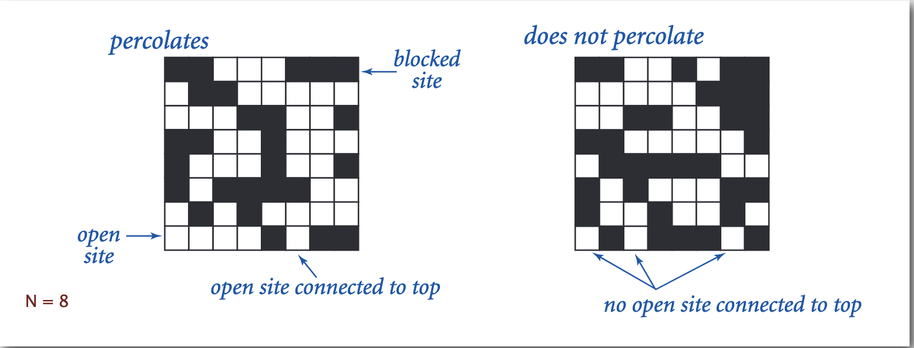

Princeton university algorithms part 1
1.5 Union Find
Dynamic connectivity
Given a set of N objects:
- Union command: connect two objects (commonly known as p and q)
- Find/connected query: is there a patch connecting the two objects?
e.g. is there a connectivity between 0 and 6?
union(1, 2)
union(3, 4)
union(5, 6)
connected(0,6) - NO
union(7, 8)
union(7, 9)
union(2, 8)
union(0, 5)
connected(0,6) - YES
union(1, 9)
Connected components - maximal set of object that are mutually connected
it the above examples we have 3 components: { 0 } { 1 4 5 } { 2 3 6 7 }
Implementations
Quick Find (eager algorithm)
Data structure. ・Integer array id[] of length N. ・Interpretation: p and q are connected iff they have the same id
given an array: [0,1,1,8,8,0,0,1,8,8] - known as id[]
we connect pairs by using:
- index as
p - value as
q
in the above example it gives as below connected components
To merge components containing p and q change all entire whose id equals id[p to id[q]]
In above case, if we are doing a union of 6 and 1 then all values for component {0, 5, 6 } needs to change id to
used in the second component - which is 1.
array after change
[1,1,1,8,8,1,1,1,8,8] - known as id[]
The change is always based on order of the IDs - we change the first one to the second one
Union is too expensive. It takes N 2 array accesses to process a sequence of N union commands on N objects.
Quick-find defect. ・Union too expensive (N array accesses). ・Trees are flat, but too expensive to keep them fla
Quick-union - lazy approach
- Integer array id[] of size N
- interpretation: id[i] is parent of i (so we have set of trees)
- Root of i is id[id[...id[id[i]...]]]
id[] = [0,9,6,5,4,2,6,1,0,5]
id[i] --- i
6 is a root of the tree containing {2,5,3,9,1,7}
Find - check if p and q have the same root. Union - to merge components containing p and q set the id of p's root to the id of the q's root. We need to change only 1 value (root of 'p') in the array to Union components together. So the new component is always pointing to the root even if the union was: child --- child or child --- root
Quick-union defect. ・Trees can get tall. ・Find too expensive (could be N array accesses)
Improvement 1: weighting
Weighted quick-union. ・Modify quick-union to avoid tall trees. ・Keep track of size of each tree (number of objects). ・Balance by linking root of smaller tree to root of larger tree.
having an array n = 4 with bellow operations
union(0,3)
and next operation is: union(1, 0) instead of attaching {3, 0} to {1} we attach {1} to {3,0} as those are the rules in weighting (attach smaller tree root to larger tree root)
Proposition. Depth of any node x is at most lg N. Pf. When does depth of x increase? Increases by 1 when tree T 1 containing x is merged into another tree T 2. ・The size of the tree containing x at least doubles since | T 2 | ≥ | T 1 |. ・Size of tree containing x can double at most lg N times. Why? If you start with 1 and double log N times, you get N and there's only N nodes in the tree. So, that's a sketch of a proof that the depth of any node x is at most log base two of N.
improvement 2: path compression
Quick union with path compression. Just after computing the root of p, set the id of each examined node to point to that root.
example:
having:
when union(0, 6) THEN 1st step is adding as in weighted
after path compression
Bottom line. Weighted quick union (with path compression) makes it possible to solve problems that could not otherwise be addressed.
・WQUPC (Weighted quick union (with path compression))reduces time from 30 years to 6 seconds. ・Supercomputer won't help much; good algorithm enables solution.
Union-Find applications
Percolation
a model for many physical systems:
- N-by-N grid of sites
- Each site is open with probability p (or blocked with probability 1-p)
- System percolates iff (if and only f) top and bottom are connected by open sites

How to check whether an N-by-N system percolates? ・Create an object for each site and name them 0 to N 2 – 1. ・Sites are in same component if connected by open sites. ・Percolates iff any site on bottom row is connected to site on top row.
When opening one new site in the percolation simulation, how many times is union() called? It is called for each neighboring site that is already open. There are 4 possible neighbors, but some of them may not already be open.
Analysing algorithms
Running time (performance) of algorithm reasons:
- avoid performance bugs
- predict performance
- compare algorithms
- provide guarantees
- understand theoretical basis
Use scientific method to understand performance
- Observe some feature of the natural world
- Hypothesize a model that is consistent with the observations
- Predict events using the hypothesis
- Verify the predictions by making further observations
- Validate by repeating until the hypothesis and observations agree
Principles:
- Experiments must be reproducible
- Hypotheses must be falsifiable
Question:
Suppose that n equals 1 million.
Approximately how much faster is an algorithm that performs n lg n operations
versus one that performs n^2 operations?
Recall that lg is the base-2 logarithm function.
n^2 / nlgn // /n
n / lgn //
10^6 / lg 10^6
2^x = 10^6
x~20
10^6 / 20 = 50 000
Approximately 50 000x faster
3-SUM
Given N distinct integers, how many triples sum to exactly zero?
Log-log plot - allows you to receive straight line which help you to understand what is the slope of the line.
Power low - each point on the straight line is equal to aN^b
lg(T(N)) = b Lg N + c // to power? T(N) = fa N^b (where a = 2^c)
system independent effects:
- algorithm
- Input data
system dependent effects:
- Hardware
- Software
- System
Type of analyses
- best case
- worst case
- average case
Theory of algorithms establish difficulty of a problem develop optimal approach e.g. 1-SUM "Is there a 0 in the array?"
Upper Bound - A specific algorithm Ex. Brute-force algorithm for 1-sum: look at every array entry Running time of the optimal algorithm for 1-Sum is O(N) Lower bound - Proof that no algorithm can do better Ex. have to examine all N entries (any unexamined one might be 0) Running time of optimal algorithm for 1-sum is M(N)
Recall that big-Oh notation provides only an upper bound on the growth rate of a function as nn gets large. In this course, we primarily use tilde notation because it more accurately describes the function—it provides both an upper and lower bound on the function as well as the coefficient of the leading term.
stacks
stack - LIFO principle queue - FIFO principle
stack often is implemented either:
- with usage of linked list by creating a class called Node.
class LinkedStackOfStrings {
private Node first = null;
private class Node {
String item;
Node next;
}
public boolean isEmpty() {
return first == null;
}
public void push(String name) {
Node oldFirst = first;
first = new Node();
first.item = name;
first.next = oldFirst;
}
public String pop() {
String item = first.item;
first = oldFirst.next;
return item;
}
}
- with usage of Array - with fixed capacity
public class FixedCapacityStackOfStrings {
private String[] s;
private int N = 0;
/*a cheat because often it's required that client doesn't know the capacity, how to solve? resizing */
public FixedCapacityStackOfStrings(int capacity) {
s = new String[capacity];
}
public boolean isEmpty() {
return N == 0;
}
public void push(String name) {
s[N++] = name;
}
public String pop() {
String name = S[--N];
s[N] == null; // remove reference to allow GC for recollection of memory
return name;
}
}
- with usage of resizing Array
public class FixedCapacityStackOfStrings {
private String[] s = new String[10];
private int N = 0;
/*a cheat because often it's required that client doesn't know the capacity, how to solve? resizing */
public FixedCapacityStackOfStrings() {
}
public boolean isEmpty() {
return N == 0;
}
public void push(String name) {
if (s.length == N) {
resize(2 * s.length);
}
s[N++] = name;
}
public String pop() {
String name = S[--N];
s[N] == null; // remove reference to allow GC for recollection of memory
return name;
}
/** @noinspection RedundantSuppression*/
private void resize(int size) {
String[] copy = new String[size];
//noinspection ManualArrayCopy
for (int i = 0; i < s.length; i++) {
copy[i] = s[i];
}
s = copy;
}
}
queue
class LinkedQueueOfStrings {
private Node first = null;
private Node last = null;
private class Node {
String item;
Node next;
}
public boolean isEmpty() {
return first == null;
}
public void enqueue(String name) {
Node oldLast = last;
last = new Node();
last.item = name;
last.next = null;
if (first == null) first = last;
else oldLast.next = last;
}
public String dequeue() {
String item = first.item;
first = first.next;
if (isEmpty()) last = null;
return item;
}
}
Iteration
Q:What is Java Iterable?
A: has a method that returns an Iterator.
Q: What is an Iterator?
A: Has methods hasNext() and next() also remove() (but using it is risky)
Be carefully with using libraries if you don't understand what is the performance of these.
e.g. java.util.Stack returns items in FIFO order